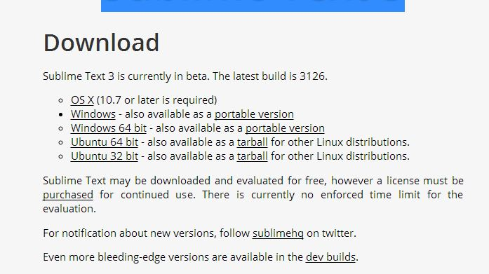
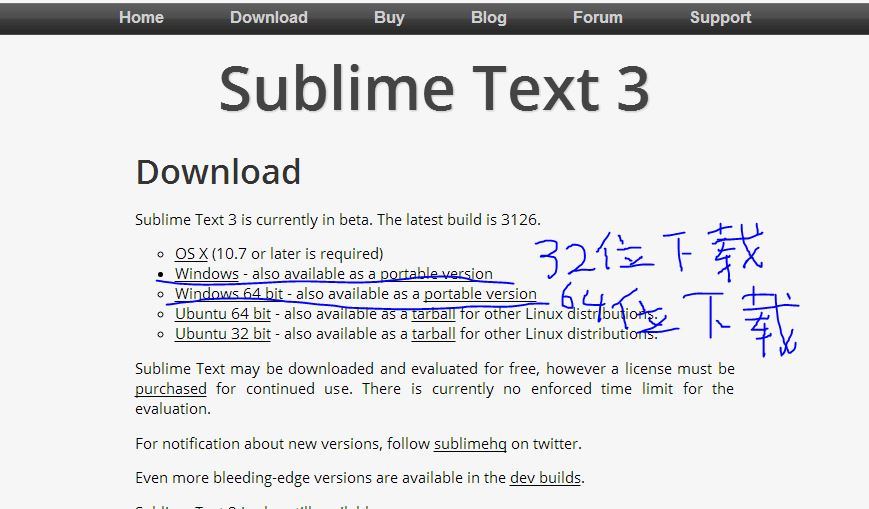
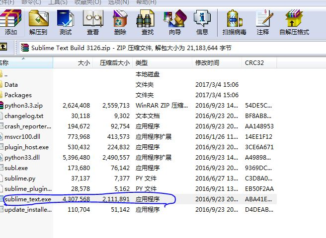
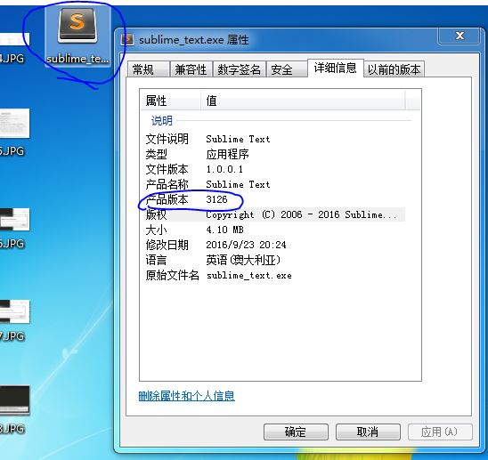
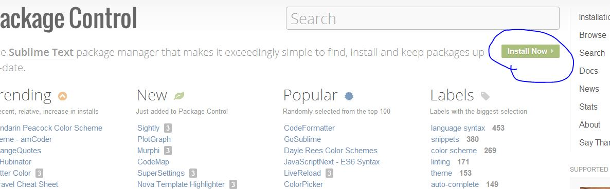
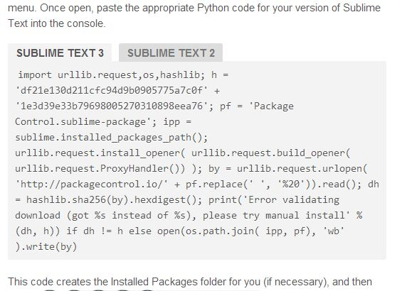
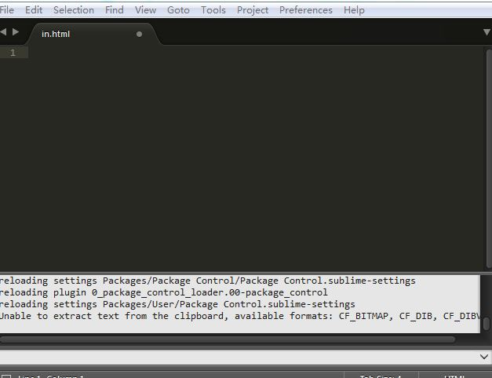
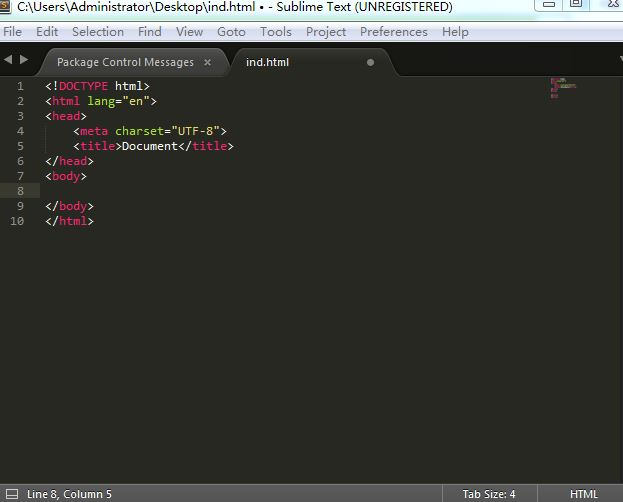

下载的网址为：https://www.sublimetext.com/3
32位于64位下载地址不同
下载之后打开如图位置进行安装
安装好后如图
下载的网址为：https://packagecontrol.io/
复制如下网址
打开Sublime Text3，同时按下Ctrl+~将之前的代码复制
在perferences里查看是否安装成功

打开package control输入install package

找到emmet，点击安装


安装成功后输入！在按tab键就能变成如下图所示
